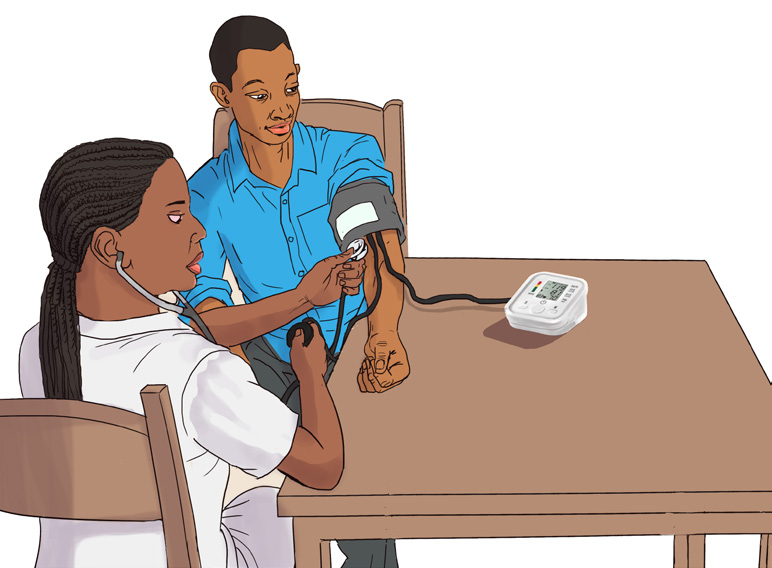

119
Student’s Book - Form Two

Biology for Secondary Schools
The pressure developed during these actions can be felt in the arteries. Blood pressure is measured by considering the systolic pressure and the diastolic pressure. It is measured in millimeters of mercury (mmHg). For example, if the pressure during systole phase is
120 mmHg and the pressure during diastole phase is 80 mmHg, the blood pressure is 120/80 mmHg. This is the average blood pressure in a normal human being. The instrument used to measure blood pressure is called a sphygmomanometer.
Activity 5.4: Measure blood pressure
Materials
Sphygmomanometer and a note book
Procedure
1.
Watch closely as your teacher or the
health officer demonstrates how
to use the sphygmomanometer to
measure blood pressure, as shown
in Figure 5.17.

Figure 5.17: Measuring blood pressure
2.
Under the guidance of your teacher,
measure the blood pressure of
your fellow student. Your fellow student should also measure your blood pressure.
3.
Compare your results with those
from the rest of the class members.
Diseases and disorders of the human circulatory system
Diseases and disorders of the human
circulatory system affect blood, blood
vessels, and the heart. Diseases and disorders may be caused by genetic
factors, unhealthy eating habits, and other
lifestyles. Eating food with high levels of cholesterol and fat causes narrowing of blood vessels due to their deposition
in blood vessels. Stress and lifestyles
such as smoking, lack of exercise, and alcohol consumption cause a great risk of developing heart diseases, including coronary heart disease and high blood pressure.
Arteriosclerosis
Arteriosclerosis is the hardening of arteries. It happens when there are fat depositions on the wall of the artery or when fibrous tissues form in the artery wall causing the narrowing of the lumen of the artery (Figure 5.18).
It can also occur when the artery wall degenerates. This hinders the normal working of the artery, affecting the efficiency of blood flow.
08/04/2026 10:18:33